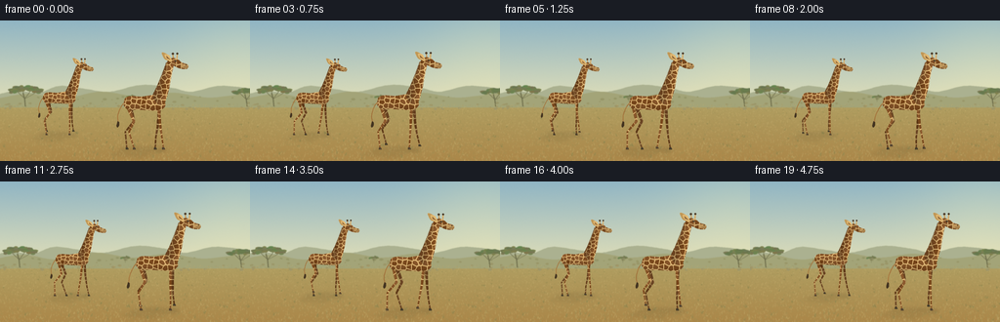
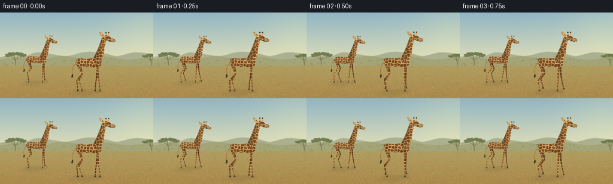
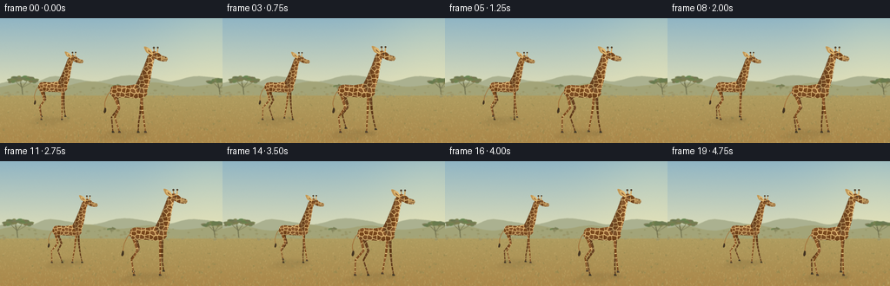
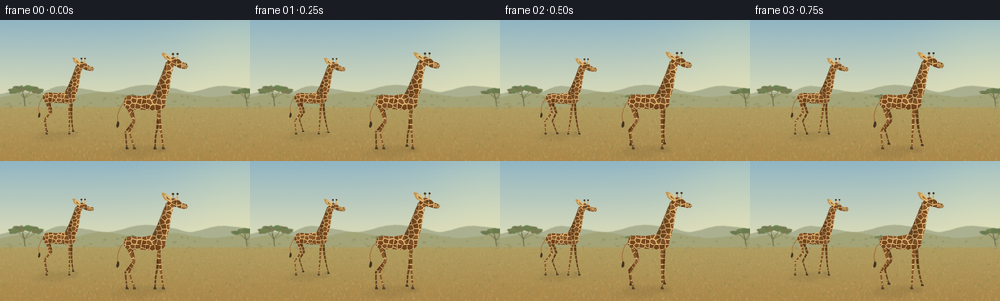

CODING AGENTS AS PIXEL WORLD MODELS
traex/GPT-6.1-Sol · instance_preservation_0011
点击播放 · 原生 RGB 像素
逐轮保存的候选
回放视频、检查图与代码变化。
每份候选均可单独播放。实际图片检查记录在下方工具轨迹中。
候选 01播放与检查图
点击播放 · 原生 RGB 像素


展开代码变化
--- 上一保存版本
+++ 本次保存版本
@@ -0,0 +1,260 @@
+"""Deterministic, supersampled procedural RGB animation; no external assets."""
+from pathlib import Path
+import math
+import numpy as np
+from PIL import Image, ImageDraw, ImageFilter
+from scipy.spatial import Voronoi
+import artifact_io
+
+ROOT = Path(__file__).resolve().parent
+W,H,S = 256,144,4
+RNG = np.random.default_rng(8237)
+
+def curve(points, steps=12):
+ # Uniform Catmull-Rom interpolation, including the endpoints.
+ p=np.array(points,float); p=np.vstack((p[0],p,p[-1])); out=[]
+ for i in range(1,len(p)-2):
+ a,b,c,d=p[i-1:i+3]
+ for t in np.linspace(0,1,steps,endpoint=False):
+ out.append(tuple(.5*((2*b)+(-a+c)*t+(2*a-5*b+4*c-d)*t*t+(-a+3*b-3*c+d)*t*t*t)))
+ out.append(tuple(p[-2])); return out
+
+def poly(d,pts,col): d.polygon([(x*S,y*S) for x,y in pts],fill=col)
+def line(d,pts,col,width): d.line([(x*S,y*S) for x,y in pts],fill=col,width=max(1,round(width*S)),joint='curve')
+def ellipse(d,box,col): d.ellipse(tuple(v*S for v in box),fill=col)
+
+# Landscape is wider than the camera; a small tracking motion is a real pixel crop.
+BW=300
+Y,X=np.mgrid[0:H*S,0:BW*S]; yy=Y/S; xx=X/S
+sky_t=np.clip(yy/82,0,1)[...,None]
+a=np.array([144,181,196]); b=np.array([223,222,184])
+base=a*(1-sky_t)+b*sky_t
+sun=np.exp(-((xx-251)**2+(yy-18)**2)/(2*51**2))[...,None]
+base=base+sun*np.array([19,12,-1])
+soil_t=np.clip((yy-72)/(H-72),0,1)[...,None]
+soil=np.array([177,164,103])*(1-soil_t)+np.array([171,135,73])*soil_t
+base=np.where((yy>75)[...,None],soil,base)
+noise=RNG.normal(0,1.0,(H*S,BW*S,1))
+background=Image.fromarray(np.uint8(np.clip(base+noise,0,255)))
+bd=ImageDraw.Draw(background)
+# Atmospheric foothills, with low contrast and softly curved contours.
+poly(bd,curve([(-3,76),(17,72),(40,74),(61,67),(87,70),(112,73),(145,66),(176,69),(196,73),(225,67),(260,70),(301,74)])+[(301,88),(-3,88)],(171,177,144))
+poly(bd,curve([(-3,80),(30,75),(64,80),(103,73),(142,78),(177,74),(215,79),(263,74),(301,78)])+[(301,89),(-3,89)],(163,164,120))
+# Distant grass and trees, unobtrusive against the giraffes.
+for i in range(75):
+ x=RNG.uniform(0,BW); y=RNG.uniform(78,91); s=RNG.uniform(.6,2.2)
+ ellipse(bd,(x-s,y-.5*s,x+s,y+.6*s),(148+int(y-78),150,104))
+
+def acacia(x,y,k,seed):
+ r=np.random.default_rng(seed)
+ trunk=(107,107,73)
+ line(bd,[(x,y),(x-.9*k,y-10*k),(x-3*k,y-17*k)],trunk,1.4*k)
+ for dx,dy in [(-14,-22),(-5,-26),(9,-23),(16,-20)]:
+ line(bd,[(x-.9*k,y-10*k),(x+dx*.6*k,y+dy*.78*k),(x+dx*k,y+dy*k)],trunk,.7*k)
+ for j in range(65):
+ dx=r.uniform(-19,20); top=-23+3*(dx/20)**2+r.normal(0,1.9)
+ q=r.uniform(2,5)
+ col=(int(r.uniform(102,129)),int(r.uniform(117,134)),int(r.uniform(74,88)))
+ ellipse(bd,(x+(dx-q)*k,y+(top-1.4)*k,x+(dx+q)*k,y+(top+1.4)*k),col)
+acacia(26,88,.8,42)
+acacia(253,88,.7,31)
+acacia(134,83,.23,123)
+# Stable fine ground texture, straw, tufts and small dusty clearings.
+for i in range(4900):
+ x=RNG.uniform(0,BW); y=RNG.uniform(86,H+2)
+ f=(y-78)/(H-78); ln=RNG.uniform(.2,1.8)*(0.4+f)
+ c=RNG.choice(4)
+ col=[(190,166,103),(151,141,83),(204,182,117),(166,145,83)][c]
+ line(bd,[(x,y),(x+RNG.uniform(-.7,.7),y-ln)],col,RNG.uniform(.12,.3))
+for i in range(120):
+ x=RNG.uniform(0,BW); y=RNG.uniform(91,143); sz=(y-80)/60
+ for j in range(RNG.integers(3,7)):
+ line(bd,[(x,y),(x+RNG.uniform(-2,2)*sz,y-RNG.uniform(1,4)*sz)],(139,132,77),.22)
+background=background.filter(ImageFilter.GaussianBlur(.36*S))
+
+# Animal coordinates are body-relative, with a resting sole at y=0.
+AX0,AY0=-42,-119
+AW,AH=105*S,128*S
+GY,GX=np.mgrid[0:AH,0:AW]
+LX=GX/S+AX0; LY=GY/S+AY0
+
+def P(p):return ((p[0]-AX0)*S,(p[1]-AY0)*S)
+def mpoly(d,pts,fill=255):d.polygon([P(q) for q in pts],fill=fill)
+def mline(d,pts,col,w):d.line([P(q) for q in pts],fill=col,width=max(1,round(w*S)),joint='curve')
+def mellipse(d,box,col): d.ellipse((P(box[:2])+P(box[2:])),fill=col)
+
+def fur(seed):
+ r=np.random.default_rng(seed)
+ tex=Image.new('RGB',(AW,AH),(223,184,119)); td=ImageDraw.Draw(tex)
+ points=[]
+ for y in np.arange(-135,22,5.5):
+ for x in np.arange(-55,82,5.5):
+ points.append([x+r.uniform(-1.7,1.7),y+r.uniform(-1.8,1.8)])
+ v=Voronoi(points)
+ for idx,pt in enumerate(points):
+ region=v.regions[v.point_region[idx]]
+ if -1 in region or len(region)<3:continue
+ corners=v.vertices[region]; center=np.mean(corners,axis=0)
+ corners=center+(corners-center)*r.uniform(.76,.86)
+ col=np.array([128,79,36])+r.uniform(-12,12)
+ mpoly(td,corners,tuple(np.uint8(np.clip(col,0,255))))
+ arr=np.asarray(tex).astype(float)
+ grain=r.normal(0,1.35,(AH,AW,1))
+ return np.clip(arr+grain,0,255)
+
+FURS={0:fur(376),1:fur(691)}
+
+def shade_sprite(mask, tex, factor, side=1):
+ factor=np.asarray(factor)
+ if factor.ndim==2:factor=factor[...,None]
+ rgb=np.clip(tex*factor*side,0,255).astype(np.uint8)
+ rgba=np.dstack((rgb,np.asarray(mask)))
+ return Image.fromarray(rgba,'RGBA')
+
+
+def upper_animal(which):
+ tex=FURS[which]
+ im=Image.new('RGBA',(AW,AH)); dd=ImageDraw.Draw(im)
+ # Ears and ossicones have recognisable delicate tips, not antlers.
+ mpoly(dd,curve([(31,-98),(26,-105),(20,-107),(23,-100),(29,-97)]),(191,151,87,255))
+ mpoly(dd,[(28,-101),(23,-105),(25,-101),(30,-98)],(121,86,50,255))
+ mline(dd,[(33,-99),(32.2,-105.4)],(191,153,95,255),1.4)
+ mellipse(dd,(30.9,-107,33.4,-104.6),(77,61,42,255))
+ mline(dd,[(36.7,-99.2),(37,-105.3)],(205,167,104,255),1.45)
+ mellipse(dd,(35.8,-107,38.1,-104.9),(71,54,36,255))
+ # Fine dark upright mane follows the rear edge of the long neck.
+ mane=curve([(9,-57),(15,-69),(21,-83),(25.7,-96)])
+ mline(dd,mane,(104,68,35,255),1.55)
+ for j in range(27):
+ u=j/26; y=-59-36*u; x=12+14*u
+ mline(dd,[(x,y),(x-1.5,y-.8)],(107,70,38,255),.28)
+ mask=Image.new('L',(AW,AH)); d=ImageDraw.Draw(mask)
+ mpoly(d,curve([(-22,-51),(-20,-57),(-14,-59),(-2,-58.5),(11,-60),(20,-56),(24,-50),(21,-45),(13,-43),(-4,-44),(-16,-44),(-21,-47),(-22,-51)]))
+ # Torso rounded lighting: smooth on top and darker under the belly.
+ f=.79+.22*np.clip(1-((LY+57)/16)**2,0,1)+.035*(LX+25)/60
+ im.alpha_composite(shade_sprite(mask,tex,f))
+ # Long tapering neck, anatomically continuous with the high shoulder.
+ mask=Image.new('L',(AW,AH));d=ImageDraw.Draw(mask)
+ mpoly(d,curve([(10,-57),(17,-74),(23,-88),(26,-97),(30,-99),(33,-94),(31,-84),(28,-68),(23,-51),(18,-48),(10,-57)]))
+ center=26-(LY+94)*.18
+ f=.80+.28*np.clip((LX-center+5)/11,0,1)
+ im.alpha_composite(shade_sprite(mask,tex,f))
+ # Elongated sloping giraffe face with a soft pale muzzle.
+ mask=Image.new('L',(AW,AH));d=ImageDraw.Draw(mask)
+ mpoly(d,curve([(27,-97),(31,-101),(37,-100),(42,-96),(48,-94),(49,-91),(47,-89),(42,-89),(36,-91),(31,-94),(27,-97)]))
+ f=.88+.15*np.clip((-LY-89)/12,0,1)
+ im.alpha_composite(shade_sprite(mask,tex,f))
+ dd=ImageDraw.Draw(im)
+ mpoly(dd,curve([(42,-94.5),(47.8,-94),(49,-91.8),(48,-89.9),(44,-90),(41.7,-91.2),(42,-94.5)]),(189,149,91,255))
+ mline(dd,curve([(44,-91),(46.7,-91.2),(48.6,-91.1)]),(105,75,43,255),.38)
+ mellipse(dd,(46.2,-93.8,47.3,-92.8),(80,58,33,255))
+ # The nearer ear and expressive, non-cartoon dark eye.
+ mpoly(dd,curve([(31,-98.5),(28,-104),(23.3,-105),(24.3,-101),(29,-97),(31,-98.5)]),(223,183,113,255))
+ mpoly(dd,[(29.6,-99),(25,-103.5),(25.3,-100.8)],(142,99,55,255))
+ mellipse(dd,(33.7,-98.7,36.3,-96.8),(113,75,37,255))
+ mellipse(dd,(34.25,-98.25,35.9,-96.85),(38,32,24,255))
+ mellipse(dd,(35.1,-98.15,35.65,-97.65),(237,224,177,255))
+ mline(dd,[(34.2,-98.4),(35.3,-98.7),(36.2,-98.1)],(64,47,28,255),.35)
+ # Subtle edge highlights on chest and neck, no outlined cartoon contours.
+ mline(dd,curve([(31.9,-91),(29.7,-80),(27.4,-69)]),(224,187,126,190),.45)
+ return im
+UPPER=[upper_animal(0),upper_animal(1)]
+
+def segment(canvas,a,b,wa,wb,which,darkness,kind):
+ a=np.array(a);b=np.array(b); delta=b-a; length=np.linalg.norm(delta); u=delta/length; n=np.array([-u[1],u[0]])
+ mask=Image.new('L',(AW,AH));md=ImageDraw.Draw(mask)
+ mpoly(md,[a+n*wa/2,b+n*wb/2,b-n*wb/2,a-n*wa/2])
+ mellipse(md,(a[0]-wa/2,a[1]-wa/2,a[0]+wa/2,a[1]+wa/2),255)
+ mellipse(md,(b[0]-wb/2,b[1]-wb/2,b[0]+wb/2,b[1]+wb/2),255)
+ t=(LX-a[0])*u[0]+(LY-a[1])*u[1]
+ across=(LX-a[0])*n[0]+(LY-a[1])*n[1]
+ # UV texture follows each bone: markings never crawl as limbs articulate.
+ tx=across+(-17 if kind=='hind' else 17)
+ ty=t+a[1]
+ ix=np.clip(np.rint((tx-AX0)*S).astype(int),0,AW-1)
+ iy=np.clip(np.rint((ty-AY0)*S).astype(int),0,AH-1)
+ tex=FURS[which][iy,ix]
+ width=wa+(wb-wa)*np.clip(t/length,0,1)
+ f=.81+.22*np.clip(1-(across/(width*.7))**2,0,1)+.035*across
+ canvas.alpha_composite(shade_sprite(mask,tex,f,darkness))
+
+def leg(canvas,anchor,ph,bob,which,far,kind):
+ # Foot travels back during stance and lifts on the forward return.
+ cycle=(ph/(2*math.pi))%1
+ if cycle < .62:
+ footx=7.5-15*cycle/.62
+ lift=0
+ else:
+ q=(cycle-.62)/.38
+ footx=-7.5+15*(.5-.5*math.cos(math.pi*q))
+ lift=5.1*math.sin(math.pi*q)
+ x,y=anchor; y+=bob
+ a=(x,y)
+ foot=(x+footx+(1.2 if far else 0),-lift)
+ if kind=='hind':
+ knee=(x+5.5+footx*.24,-31+bob*.5-lift*.28)
+ hock=(x-2.5+footx*.58,-19-lift*.6)
+ joints=[a,knee,hock,(foot[0],foot[1]-.9)]
+ widths=[4.0,2.65,1.55,1.22]
+ else:
+ knee=(x+footx*.37,-27+bob*.4-lift*.2)
+ hock=(x+footx*.73,-13-lift*.7)
+ joints=[a,knee,hock,(foot[0],foot[1]-.9)]
+ widths=[3.75,2.3,1.5,1.2]
+ darkness=.76 if far else 1
+ for j in range(3):segment(canvas,joints[j],joints[j+1],widths[j],widths[j+1],which,darkness,kind)
+ dd=ImageDraw.Draw(canvas)
+ hx,hy=foot
+ mpoly(dd,[(hx-1.25,hy-1.9),(hx+.8,hy-1.8),(hx+1.65,hy-.25),(hx+1.6,hy+.25),(hx-1.35,hy+.25)],(60 if far else 78,52 if far else 62,36 if far else 43,255))
+ mline(dd,[(hx+.1,hy-1.6),(hx+.4,hy)],(120,102,74,255),.17)
+
+
+def giraffe(which,t,scale,cx,ground):
+ phase=2*math.pi*t/2.2+(1.65 if which else 0)
+ bob=.42*math.cos(phase*2)
+ im=Image.new('RGBA',(AW,AH)); d=ImageDraw.Draw(im)
+ # Tail has a soft delayed swing and a black tuft.
+ sw=2.5*math.sin(phase*.68+.5)
+ tail=curve([(-20,-53+bob),(-25,-47+bob),(-29+sw*.4,-37),(-29+sw,-29)])
+ mline(d,tail,(158,112,59,255),1.0)
+ tip=tail[-1]
+ mpoly(d,curve([(tip[0]-.7,tip[1]-2),(tip[0]-2,tip[1]+3),(tip[0]-1,tip[1]+5),(tip[0]+.8,tip[1]+3),(tip[0]+.9,tip[1]-1)]),(66,51,32,255))
+ # Giraffes have a lateral-sequence walking gait; left/right pairs are offset.
+ leg(im,(-15,-49),phase+math.pi,bob,which,True,'hind')
+ leg(im,(18,-51),phase+math.pi+.46,bob,which,True,'front')
+ leg(im,(-18,-49),phase,bob,which,False,'hind')
+ leg(im,(16,-52),phase+.46,bob,which,False,'front')
+ im.alpha_composite(UPPER[which],(0,round(bob*S)))
+ # Local image to world, keeping persistent size and identity.
+ im=im.resize((round(AW*scale),round(AH*scale)),Image.Resampling.LANCZOS)
+ return im,(round((cx+AX0*scale)*S),round((ground+AY0*scale)*S))
+
+
+def render(i):
+ t=i/4
+ camera=2.05*t
+ frame=background.crop((round(camera*S),0,round(camera*S)+W*S,H*S)).convert('RGBA')
+ # Larger foreground animal, smaller companion on a slightly farther path.
+ animals=[(1,.73,60+6.7*t-camera,117),(0,.93,147+6.7*t-camera,132)]
+ shadow=Image.new('RGBA',frame.size); sd=ImageDraw.Draw(shadow)
+ for which,sc,x,ground in animals:
+ ellipse(sd,(x-26*sc,ground-1.4,x+26*sc,ground+3*sc),(66,60,31,53))
+ poly(sd,[(x-20*sc,ground),(x+18*sc,ground),(x-1*sc,ground+9*sc),(x-39*sc,ground+6*sc)],(77,65,34,24))
+ shadow=shadow.filter(ImageFilter.GaussianBlur(1.9*S));frame.alpha_composite(shadow)
+ for which,sc,x,ground in animals:
+ animal,position=giraffe(which,t,sc,x,ground)
+ frame.alpha_composite(animal,position)
+ # A few foreground grass tips, tied to the ground and not to the camera.
+ fd=ImageDraw.Draw(frame)
+ r=np.random.default_rng(776)
+ for j in range(110):
+ x=r.uniform(0,BW)-camera; y=r.uniform(128,147)
+ if y>137 or j%5==0:
+ line(fd,[(x,y),(x+r.uniform(-1,1),y-r.uniform(.6,2.8))],(162,143,82,255),.23)
+ frame=frame.convert('RGB').resize((W,H),Image.Resampling.LANCZOS)
+ return np.asarray(frame,dtype=np.uint8)
+
+if __name__=='__main__':
+ frames=np.stack([render(i) for i in range(20)])
+ artifact_io.save(frames,ROOT)
+ print('Saved',frames.shape,frames.dtype,'to',ROOT/'pixels.npz')
候选 02播放与检查图
点击播放 · 原生 RGB 像素


展开代码变化
--- 上一保存版本
+++ 本次保存版本
@@ -109,7 +109,7 @@
if factor.ndim==2:factor=factor[...,None]
rgb=np.clip(tex*factor*side,0,255).astype(np.uint8)
rgba=np.dstack((rgb,np.asarray(mask)))
- return Image.fromarray(rgba,'RGBA')
+ return Image.fromarray(rgba)
def upper_animal(which):
@@ -235,7 +235,10 @@
camera=2.05*t
frame=background.crop((round(camera*S),0,round(camera*S)+W*S,H*S)).convert('RGBA')
# Larger foreground animal, smaller companion on a slightly farther path.
- animals=[(1,.73,60+6.7*t-camera,117),(0,.93,147+6.7*t-camera,132)]
+ # Match forward velocity to the backward stance stroke so planted feet do not slide.
+ stride_velocity=15/(.62*2.2)
+ animals=[(1,.73,60+.73*stride_velocity*t-camera,117),
+ (0,.93,147+.93*stride_velocity*t-camera,132)]
shadow=Image.new('RGBA',frame.size); sd=ImageDraw.Draw(shadow)
for which,sc,x,ground in animals:
ellipse(sd,(x-26*sc,ground-1.4,x+26*sc,ground+3*sc),(66,60,31,53))
可观测工具轨迹
实际执行的命令与返回图片。
命令 1exit 0
/bin/bash -lc 'ls -la && cat prompt.txt && cat GENERATION_RULES.md && cat task_spec.json'
命令 2exit 0
/bin/bash -lc 'cat artifact_io.py && cat player_template.html'
命令 3exit 0
/bin/bash -lc "python - <<'PY'
import PIL, numpy
try:
import scipy
print('scipy',scipy.__version__)
except ImportError:
print('no scipy')
PY"命令 4exit 0
/bin/bash -lc "cat > generate.py <<'PY'
\"\"\"Deterministic, supersampled procedural RGB animation; no external assets.\"\"\"
from pathlib import Path
import math
import numpy as np
from PIL import Image, ImageDraw, ImageFilter
from scipy.spatial import Voronoi
import artifact_io
ROOT = Path(__file__).resolve().parent
W,H,S = 256,144,4
RNG = np.random.default_rng(8237)
def curve(points, steps=12):
# Uniform Catmull-Rom interpolation, including the endpoints.
p=np.array(points,float); p=np.vstack((p[0],p,p[-1])); out=[]
for i in range(1,len(p)-2):
a,b,c,d=p[i-1:i+3]
for t in np.linspace(0,1,steps,endpoint=False):
out.append(tuple(.5*((2*b)+(-a+c)*t+(2*a-5*b+4*c-d)*t*t+(-a+3*b-3*c+d)*t*t*t)))
out.append(tuple(p[-2])); return out
def poly(d,pts,col): d.polygon([(x*S,y*S) for x,y in pts],fill=col)
def line(d,pts,col,width): d.line([(x*S,y*S) for x,y in pts],fill=col,width=max(1,round(width*S)),joint='curve')
def ellipse(d,box,col): d.ellipse(tuple(v*S for v in box),fill=col)
# Landscape is wider than the camera; a small tracking motion is a real pixel crop.
BW=300
Y,X=np.mgrid[0:H*S,0:BW*S]; yy=Y/S; xx=X/S
sky_t=np.clip(yy/82,0,1)[...,None]
a=np.array([144,181,196]); b=np.array([223,222,184])
base=a*(1-sky_t)+b*sky_t
sun=np.exp(-((xx-251)**2+(yy-18)**2)/(2*51**2))[...,None]
base=base+sun*np.array([19,12,-1])
soil_t=np.clip((yy-72)/(H-72),0,1)[...,None]
soil=np.array([177,164,103])*(1-soil_t)+np.array([171,135,73])*soil_t
base=np.where((yy>75)[...,None],soil,base)
noise=RNG.normal(0,1.0,(H*S,BW*S,1))
background=Image.fromarray(np.uint8(np.clip(base+noise,0,255)))
bd=ImageDraw.Draw(background)
# Atmospheric foothills, with low contrast and softly curved contours.
poly(bd,curve([(-3,76),(17,72),(40,74),(61,67),(87,70),(112,73),(145,66),(176,69),(196,73),(225,67),(260,70),(301,74)])+[(301,88),(-3,88)],(171,177,144))
poly(bd,curve([(-3,80),(30,75),(64,80),(103,73),(142,78),(177,74),(215,79),(263,74),(301,78)])+[(301,89),(-3,89)],(163,164,120))
# Distant grass and trees, unobtrusive against the giraffes.
for i in range(75):
x=RNG.uniform(0,BW); y=RNG.uniform(78,91); s=RNG.uniform(.6,2.2)
ellipse(bd,(x-s,y-.5*s,x+s,y+.6*s),(148+int(y-78),150,104))
def acacia(x,y,k,seed):
r=np.random.default_rng(seed)
trunk=(107,107,73)
line(bd,[(x,y),(x-.9*k,y-10*k),(x-3*k,y-17*k)],trunk,1.4*k)
for dx,dy in [(-14,-22),(-5,-26),(9,-23),(16,-20)]:
line(bd,[(x-.9*k,y-10*k),(x+dx*.6*k,y+dy*.78*k),(x+dx*k,y+dy*k)],trunk,.7*k)
for j in range(65):
dx=r.uniform(-19,20); top=-23+3*(dx/20)**2+r.normal(0,1.9)
q=r.uniform(2,5)
col=(int(r.uniform(102,129)),int(r.uniform(117,134)),int(r.uniform(74,88)))
ellipse(bd,(x+(dx-q)*k,y+(top-1.4)*k,x+(dx+q)*k,y+(top+1.4)*k),col)
acacia(26,88,.8,42)
acacia(253,88,.7,31)
acacia(134,83,.23,123)
# Stable fine ground texture, straw, tufts and small dusty clearings.
for i in range(4900):
x=RNG.uniform(0,BW); y=RNG.uniform(86,H+2)
f=(y-78)/(H-78); ln=RNG.uniform(.2,1.8)*(0.4+f)
c=RNG.choice(4)
col=[(190,166,103),(151,141,83),(204,182,117),(166,145,83)][c]
line(bd,[(x,y),(x+RNG.uniform(-.7,.7),y-ln)],col,RNG.uniform(.12,.3))
for i in range(120):
x=RNG.uniform(0,BW); y=RNG.uniform(91,143); sz=(y-80)/60
for j in range(RNG.integers(3,7)):
line(bd,[(x,y),(x+RNG.uniform(-2,2)*sz,y-RNG.uniform(1,4)*sz)],(139,132,77),.22)
background=background.filter(ImageFilter.GaussianBlur(.36*S))
# Animal coordinates are body-relative, with a resting sole at y=0.
AX0,AY0=-42,-119
AW,AH=105*S,128*S
GY,GX=np.mgrid[0:AH,0:AW]
LX=GX/S+AX0; LY=GY/S+AY0
def P(p):return ((p[0]-AX0)*S,(p[1]-AY0)*S)
def mpoly(d,pts,fill=255):d.polygon([P(q) for q in pts],fill=fill)
def mline(d,pts,col,w):d.line([P(q) for q in pts],fill=col,width=max(1,round(w*S)),joint='curve')
def mellipse(d,box,col): d.ellipse((P(box[:2])+P(box[2:])),fill=col)
def fur(seed):
r=np.random.default_rng(seed)
tex=Image.new('RGB',(AW,AH),(223,184,119)); td=ImageDraw.Draw(tex)
points=[]
for y in np.arange(-135,22,5.5):
for x in np.arange(-55,82,5.5):
points.append([x+r.uniform(-1.7,1.7),y+r.uniform(-1.8,1.8)])
v=Voronoi(points)
for idx,pt in enumerate(points):
region=v.regions[v.point_region[idx]]
if -1 in region or len(region)<3:continue
corners=v.vertices[region]; center=np.mean(corners,axis=0)
corners=center+(corners-center)*r.uniform(.76,.86)
col=np.array([128,79,36])+r.uniform(-12,12)
mpoly(td,corners,tuple(np.uint8(np.clip(col,0,255))))
arr=np.asarray(tex).astype(float)
grain=r.normal(0,1.35,(AH,AW,1))
return np.clip(arr+grain,0,255)
FURS={0:fur(376),1:fur(691)}
def shade_sprite(mask, tex, factor, side=1):
factor=np.asarray(factor)
if factor.ndim==2:factor=factor[...,None]
rgb=np.clip(tex*factor*side,0,255).astype(np.uint8)
rgba=np.dstack((rgb,np.asarray(mask)))
return Image.fromarray(rgba,'RGBA')
def upper_animal(which):
tex=FURS[which]
im=Image.new('RGBA',(AW,AH)); dd=ImageDraw.Draw(im)
# Ears and ossicones have recognisable delicate tips, not antlers.
mpoly(dd,curve([(31,-98),(26,-105),(20,-107),(23,-100),(29,-97)]),(191,151,87,255))
mpoly(dd,[(28,-101),(23,-105),(25,-101),(30,-98)],(121,86,50,255))
mline(dd,[(33,-99),(32.2,-105.4)],(191,153,95,255),1.4)
mellipse(dd,(30.9,-107,33.4,-104.6),(77,61,42,255))
mline(dd,[(36.7,-99.2),(37,-105.3)],(205,167,104,255),1.45)
mellipse(dd,(35.8,-107,38.1,-104.9),(71,54,36,255))
# Fine dark upright mane follows the rear edge of the long neck.
mane=curve([(9,-57),(15,-69),(21,-83),(25.7,-96)])
mline(dd,mane,(104,68,35,255),1.55)
for j in range(27):
u=j/26; y=-59-36*u; x=12+14*u
mline(dd,[(x,y),(x-1.5,y-.8)],(107,70,38,255),.28)
mask=Image.new('L',(AW,AH)); d=ImageDraw.Draw(mask)
mpoly(d,curve([(-22,-51),(-20,-57),(-14,-59),(-2,-58.5),(11,-60),(20,-56),(24,-50),(21,-45),(13,-43),(-4,-44),(-16,-44),(-21,-47),(-22,-51)]))
# Torso rounded lighting: smooth on top and darker under the belly.
f=.79+.22*np.clip(1-((LY+57)/16)**2,0,1)+.035*(LX+25)/60
im.alpha_composite(shade_sprite(mask,tex,f))
# Long tapering neck, anatomically continuous with the high shoulder.
mask=Image.new('L',(AW,AH));d=ImageDraw.Draw(mask)
mpoly(d,curve([(10,-57),(17,-74),(23,-88),(26,-97),(30,-99),(33,-94),(31,-84),(28,-68),(23,-51),(18,-48),(10,-57)]))
center=26-(LY+94)*.18
f=.80+.28*np.clip((LX-center+5)/11,0,1)
im.alpha_composite(shade_sprite(mask,tex,f))
# Elongated sloping giraffe face with a soft pale muzzle.
mask=Image.new('L',(AW,AH));d=ImageDraw.Draw(mask)
mpoly(d,curve([(27,-97),(31,-101),(37,-100),(42,-96),(48,-94),(49,-91),(47,-89),(42,-89),(36,-91),(31,-94),(27,-97)]))
f=.88+.15*np.clip((-LY-89)/12,0,1)
im.alpha_composite(shade_sprite(mask,tex,f))
dd=ImageDraw.Draw(im)
mpoly(dd,curve([(42,-94.5),(47.8,-94),(49,-91.8),(48,-89.9),(44,-90),(41.7,-91.2),(42,-94.5)]),(189,149,91,255))
mline(dd,curve([(44,-91),(46.7,-91.2),(48.6,-91.1)]),(105,75,43,255),.38)
mellipse(dd,(46.2,-93.8,47.3,-92.8),(80,58,33,255))
# The nearer ear and expressive, non-cartoon dark eye.
mpoly(dd,curve([(31,-98.5),(28,-104),(23.3,-105),(24.3,-101),(29,-97),(31,-98.5)]),(223,183,113,255))
mpoly(dd,[(29.6,-99),(25,-103.5),(25.3,-100.8)],(142,99,55,255))
mellipse(dd,(33.7,-98.7,36.3,-96.8),(113,75,37,255))
mellipse(dd,(34.25,-98.25,35.9,-96.85),(38,32,24,255))
mellipse(dd,(35.1,-98.15,35.65,-97.65),(237,224,177,255))
mline(dd,[(34.2,-98.4),(35.3,-98.7),(36.2,-98.1)],(64,47,28,255),.35)
# Subtle edge highlights on chest and neck, no outlined cartoon contours.
mline(dd,curve([(31.9,-91),(29.7,-80),(27.4,-69)]),(224,187,126,190),.45)
return im
UPPER=[upper_animal(0),upper_animal(1)]
def segment(canvas,a,b,wa,wb,which,darkness,kind):
a=np.array(a);b=np.array(b); delta=b-a; length=np.linalg.norm(delta); u=delta/length; n=np.array([-u[1],u[0]])
mask=Image.new('L',(AW,AH));md=ImageDraw.Draw(mask)
mpoly(md,[a+n*wa/2,b+n*wb/2,b-n*wb/2,a-n*wa/2])
mellipse(md,(a[0]-wa/2,a[1]-wa/2,a[0]+wa/2,a[1]+wa/2),255)
mellipse(md,(b[0]-wb/2,b[1]-wb/2,b[0]+wb/2,b[1]+wb/2),255)
t=(LX-a[0])*u[0]+(LY-a[1])*u[1]
across=(LX-a[0])*n[0]+(LY-a[1])*n[1]
# UV texture follows each bone: markings never crawl as limbs articulate.
tx=across+(-17 if kind=='hind' else 17)
ty=t+a[1]
ix=np.clip(np.rint((tx-AX0)*S).astype(int),0,AW-1)
iy=np.clip(np.rint((ty-AY0)*S).astype(int),0,AH-1)
tex=FURS[which][iy,ix]
width=wa+(wb-wa)*np.clip(t/length,0,1)
f=.81+.22*np.clip(1-(across/(width*.7))**2,0,1)+.035*across
canvas.alpha_composite(shade_sprite(mask,tex,f,darkness))
def leg(canvas,anchor,ph,bob,which,far,kind):
# Foot travels back during stance and lifts on the forward return.
cycle=(ph/(2*math.pi))%1
if cycle < .62:
footx=7.5-15*cycle/.62
lift=0
else:
q=(cycle-.62)/.38
footx=-7.5+15*(.5-.5*math.cos(math.pi*q))
lift=5.1*math.sin(math.pi*q)
x,y=anchor; y+=bob
a=(x,y)
foot=(x+footx+(1.2 if far else 0),-lift)
if kind=='hind':
knee=(x+5.5+footx*.24,-31+bob*.5-lift*.28)
hock=(x-2.5+footx*.58,-19-lift*.6)
joints=[a,knee,hock,(foot[0],foot[1]-.9)]
widths=[4.0,2.65,1.55,1.22]
else:
knee=(x+footx*.37,-27+bob*.4-lift*.2)
hock=(x+footx*.73,-13-lift*.7)
joints=[a,knee,hock,(foot[0],foot[1]-.9)]
widths=[3.75,2.3,1.5,1.2]
darkness=.76 if far else 1
for j in range(3):segment(canvas,joints[j],joints[j+1],widths[j],widths[j+1],which,darkness,kind)
dd=ImageDraw.Draw(canvas)
hx,hy=foot
mpoly(dd,[(hx-1.25,hy-1.9),(hx+.8,hy-1.8),(hx+1.65,hy-.25),(hx+1.6,hy+.25),(hx-1.35,hy+.25)],(60 if far else 78,52 if far else 62,36 if far else 43,255))
mline(dd,[(hx+.1,hy-1.6),(hx+.4,hy)],(120,102,74,255),.17)
def giraffe(which,t,scale,cx,ground):
phase=2*math.pi*t/2.2+(1.65 if which else 0)
bob=.42*math.cos(phase*2)
im=Image.new('RGBA',(AW,AH)); d=ImageDraw.Draw(im)
# Tail has a soft delayed swing and a black tuft.
sw=2.5*math.sin(phase*.68+.5)
tail=curve([(-20,-53+bob),(-25,-47+bob),(-29+sw*.4,-37),(-29+sw,-29)])
mline(d,tail,(158,112,59,255),1.0)
tip=tail[-1]
mpoly(d,curve([(tip[0]-.7,tip[1]-2),(tip[0]-2,tip[1]+3),(tip[0]-1,tip[1]+5),(tip[0]+.8,tip[1]+3),(tip[0]+.9,tip[1]-1)]),(66,51,32,255))
# Giraffes have a lateral-sequence walking gait; left/right pairs are offset.
leg(im,(-15,-49),phase+math.pi,bob,which,True,'hind')
leg(im,(18,-51),phase+math.pi+.46,bob,which,True,'front')
leg(im,(-18,-49),phase,bob,which,False,'hind')
leg(im,(16,-52),phase+.46,bob,which,False,'front')
im.alpha_composite(UPPER[which],(0,round(bob*S)))
# Local image to world, keeping persistent size and identity.
im=im.resize((round(AW*scale),round(AH*scale)),Image.Resampling.LANCZOS)
return im,(round((cx+AX0*scale)*S),round((ground+AY0*scale)*S))
def render(i):
t=i/4
camera=2.05*t
frame=background.crop((round(camera*S),0,round(camera*S)+W*S,H*S)).convert('RGBA')
# Larger foreground animal, smaller companion on a slightly farther path.
animals=[(1,.73,60+6.7*t-camera,117),(0,.93,147+6.7*t-camera,132)]
shadow=Image.new('RGBA',frame.size); sd=ImageDraw.Draw(shadow)
for which,sc,x,ground in animals:
ellipse(sd,(x-26*sc,ground-1.4,x+26*sc,ground+3*sc),(66,60,31,53))
poly(sd,[(x-20*sc,ground),(x+18*sc,ground),(x-1*sc,ground+9*sc),(x-39*sc,ground+6*sc)],(77,65,34,24))
shadow=shadow.filter(ImageFilter.GaussianBlur(1.9*S));frame.alpha_composite(shadow)
for which,sc,x,ground in animals:
animal,position=giraffe(which,t,sc,x,ground)
frame.alpha_composite(animal,position)
# A few foreground grass tips, tied to the ground and not to the camera.
fd=ImageDraw.Draw(frame)
r=np.random.default_rng(776)
for j in range(110):
x=r.uniform(0,BW)-camera; y=r.uniform(128,147)
if y>137 or j%5==0:
line(fd,[(x,y),(x+r.uniform(-1,1),y-r.uniform(.6,2.8))],(162,143,82,255),.23)
frame=frame.convert('RGB').resize((W,H),Image.Resampling.LANCZOS)
return np.asarray(frame,dtype=np.uint8)
if __name__=='__main__':
frames=np.stack([render(i) for i in range(20)])
artifact_io.save(frames,ROOT)
print('Saved',frames.shape,frames.dtype,'to',ROOT/'pixels.npz')
PY
python generate.py"命令 5exit 0
/bin/bash -lc "python - <<'PY'
p='generate.py'
s=open(p).read().replace(\"return Image.fromarray(rgba,'RGBA')\", \"return Image.fromarray(rgba)\")
s=s.replace(\"animals=[(1,.73,60+6.7*t-camera,117),(0,.93,147+6.7*t-camera,132)]\", \"# Match forward velocity to the backward stance stroke so planted feet do not slide.\\n stride_velocity=15/(.62*2.2)\\n animals=[(1,.73,60+.73*stride_velocity*t-camera,117),\\n (0,.93,147+.93*stride_velocity*t-camera,132)]\")
open(p,'w').write(s)
PY
python generate.py
python - <<'PY'
from pathlib import Path
import numpy as np
from PIL import Image
p=Path('.')
a=np.load(p/'pixels.npz')['pixels']
fs=list((p/'frames').glob('*.png'))
assert a.shape==(144,256,20)
assert len(fs)==20
assert all(Image.open(f).mode=='RGB' and Image.open(f).size==(256,144) for f in fs)
assert all((p/f).is_file() for f in ['generate.py','index.html','inspection.png','transition_check.png'])
print('Verified: 20 RGB frames, 256x144, player and packed pixels present.')
print('Temporal changed pixel fraction:', np.mean(a[:,:,1:] "'!= a[:,:,:-1]))
PY'保存候选 2 份；完成命令 5 次；可验证图片返回 0 张。原始 API 响应与完整日志保留在本地。